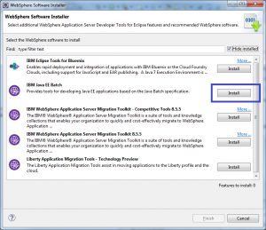
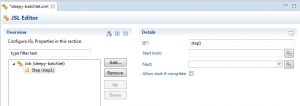
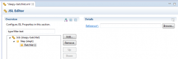
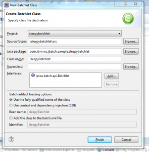
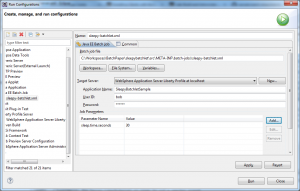

WebSphere Application Server Developer Tools for Eclipse (WDT) provides tools to create Java batch projects based on the Java Batch 1.0 standard (JSR 352) and submit them to a Liberty profile server. This article explains how to set up the tools for creating batch projects, create a simple batch project, deploy the project to a Liberty profile server and submit a job.
The code used in this article is based on the sleepybatchlet sample on Github.
Installing WebSphere Developer Tools (WDT) and the Java batch tools
Install the WDT tools (install the WebSphere Application Server Liberty Profile tools feature). The tools for working with Java batch projects can be installed after you install WDT. For more detail, see the Knowledge Center article.
To install the Java batch tools:
- In Eclipse, click Help > Install WebSphere Software.
- Click Install in the IBM Java EE Batch option then click Finish:
 - Finish the wizard and restart WDT.
{kind=link}
Note: This method only works if you have an internet connection. If you are doing an offline installation, follow the offline installation procedure
Configuring the Liberty server
The following steps describe how to create a Liberty server and configure it to run batch jobs.
Creating the Liberty server
- Create a Liberty server using the tools using WAS Liberty version 8.5.5.6 or newer. For more detail, see the Knowledge Center article.
- Add the following feature to your
server.xml:<featureManager> <feature>batchManagement-1.0</feature> </featureManager>
The
batch-1.0feature is then automatically enabled. - Start the server (right-click the server, click Start). For more detail, see the Knowledge Center article.
Configuring persistence
The Liberty batch feature needs a persistence store to work properly. You only need to point to your database in the server configuration, as the batch runtime will auto-create the required tables. You can choose among the standard list of supported DB vendors, and can also use the memory-based persistence store to bypass the need for a database altogether.
- In this example, we will use Derby, and create the database automatically by using the attribute
createDatabase="create":- Download
derby.jar, distributed as part of the Apache Derby JDBC driver, from db.apache.org/derby/derby_downloads.html - Create a
derbyresources directory and copy thederby.jarfile you just downloaded into it. For example:mkdir -p usr/servers/defaultServer/resources/derby cp derby.jar usr/servers/defaultServer/resources/derby/
- Download
- Configure a data source and database store in your
server.xml. The following stanza will automatically create a Derby database calledBATCHDBin${server.config.dir}/resources, using the Derby driver (derby.jar) located in${server.config.dir}/resources/derby:<dataSource id="batchDB"> <jdbcDriver> <library> <fileset dir="${server.config.dir}/resources/derby" includes="derby.jar" /> </library> </jdbcDriver> <properties.derby.embedded createDatabase="create" databaseName="${server.config.dir}/resources/BATCHDB" password="pass" user="user"/> </dataSource> <databaseStore id="BatchDatabaseStore" dataSourceRef="batchDB" />Note that by default,
${server.config.dir}resolves to the directoryusr/servers/server_name. - Configure batch persistence in
server.xml, referencing the data source you just defined via the database store.<batchPersistence jobStoreRef="BatchDatabaseStore" />
- See Configuring batch persistence for more information on persistence options.
Creating a batch project
Let’s create a simple batch project called sleepybatchlet.
- Click File > New > Project > Java EE Batch > Java EE Batch Project then click Next.
- In the Project name field, type
sleepybatchlet - In the Target runtime field, select WebSphere Application Server Liberty Profile.
- Change the name of the Dynamic Web project to
SleepyBatchletSampleand click Finish.
{kind=link}
Creating the job
Let’s create a simple job that will run for some time which can be specified using a job parameter:
- Right-click the sleepybatchlet project and select New > Batch Job.
- In the Job Name field, type
sleepy-batchletand click Finish.
{kind=link}
A new file sleepy-batchlet.xml is created in the folder META-INF/batch-jobs of the project, and is opened in the JSL editor, a graphical editor that simplifies working with batch job files.
Creating the batchlet step
A batchlet step is a task-oriented step (as opposed to a chunk step, which is item-oriented), which can be used to perform tasks such as running a command. To create the batchlet step that will perform all the work in this job:
- Select the Job node in the JSL editor, select Add > Step and click OK.
- Change the ID to
step1
 - Select the Step node, click Add > Batchlet and click OK.
 - Click the Reference link to open the New Batchlet Class wizard.
- In the Java package field, type
com.ibm.ws.jbatch.sample.sleepybatchlet - In the Class name field, type
SleepyBatchlet - In the Batch artifact loading option section, use the default (Use the fully qualified name of the class). Click Finish.
 - A new class is created with some stub methods. Replace the contents of the class with the following code and save the file:
package com.ibm.ws.jbatch.sample.sleepybatchlet; import java.util.logging.Logger; import javax.batch.api.BatchProperty; import javax.batch.api.Batchlet; import javax.inject.Inject; public class SleepyBatchlet implements Batchlet { /** * Default constructor. */ public SleepyBatchlet() { // Blank } private final static Logger logger = Logger.getLogger(SleepyBatchlet.class.getName()); /** * Logging helper. */ protected static void log(String method, Object msg) { System.out.println("SleepyBatchlet: " + method + ": " + String.valueOf(msg)); logger.info("SleepyBatchlet: " + method + ": " + String.valueOf(msg)); } /** * This flag gets set if the batchlet is stopped. This will break the batchlet * out of its sleepy loop. */ private boolean stopRequested = false; /** * The total sleep time, in seconds. */ @Inject @BatchProperty(name = "sleep.time.seconds") String sleepTimeSecondsProperty; private int sleepTime_s = 15; /** * Main entry point. */ @Override public String process() throws Exception { log("process", "entry"); if (sleepTimeSecondsProperty != null) { sleepTime_s = Integer.parseInt(sleepTimeSecondsProperty); } log("process", "sleep for: " + sleepTime_s ); int i; for (i = 0; i < sleepTime_s && !stopRequested; ++i) { log("process", "[" + i + "] sleeping for a second..."); Thread.sleep(1 * 1000); } String exitStatus = "SleepyBatchlet:i=" + i + ";stopRequested=" + stopRequested; log("process", "exit. exitStatus: " + exitStatus); return exitStatus; } /** * Called if the batchlet is stopped by the container. */ @Override public void stop() throws Exception { log("stop:", ""); stopRequested = true; } }This code will print a message to the console and also to the job log every second for a number of seconds (15 by default) and then finish.
- Let’s add a property to the batchlet. This property controls how long the step will run, and can be configured using job parameters. In the JSL editor, select the Batchlet node (located under the Step node), click Add > Properties and click OK.
- Select the node Properties, click Add > Property and click OK.
- In the Name field, type
sleep.time.seconds - In the Value field, type:
#{jobParameters['sleep.time.seconds']}
This expression indicates that the value of the propertysleep.time.secondsis the value of the job parametersleep.time.seconds - Save the file
sleepy-batchlet.xml.
{kind=link}
{kind=link}
{kind=link}
Deploying the application to the Liberty server
Before submitting the job, the application must be deployed to Liberty.
- In the Servers view, right-click the Liberty Server.
- Select the Add and Remove option.
- Double click the SleepyBatchSample project and click Finish.
Submitting the job
The JSR 352 provides the interface javax.batch.operations.JobOperator which can be used to submit jobs, for example, from a servlet in a web application:
JobOperator jobOperator = BatchRuntime.getJobOperator();
long execId = jobOperator.start("sleepy-batchlet", getJobParameters(request, "sleep.time.seconds"));
JobInstance jobInstance = jobOperator.getJobInstance(execId);
JobExecution jobExecution = jobOperator.getJobExecution(execId);
In WDT, you can use a run configuration to submit jobs to Liberty, eliminating the need to write a custom servlet to submit jobs. In order to use the run configuration, we need to configure an SSL certificate and define a basic user registry with a user in the server.xml file. Add this to server.xml:
<!-- The default self-signed SSL certificate in this example is intended only for development use and not for production. --> <keyStore id="defaultKeyStore" password="Liberty"/> <basicRegistry id="basic" realm="ibm/api"> <user name="bob" password="bobpwd" /> </basicRegistry>
Now, let’s submit the job to Liberty:
- In the Enterprise Explorer view, right-click on the file
sleepy-batchlet.xmland select Run As > Java EE Batch Job. - In the User ID field, type
bob - In the Password field, type
bobpwd - Click Add to add a job parameter to override the default 15 seconds. In the Name field, enter
sleep.time.seconds. In the Value field, enter30, and click OK. - The launch configuration should look similar to this:
 - Click Run to submit the job.
{kind=link}
You should see a dialog similar to this one:
{kind=link}
And you should see the following text in the Console view in Eclipse:
SleepyBatchlet: process: entry SleepyBatchlet: process: sleep for: 30 SleepyBatchlet: process: [0] sleeping for a second... SleepyBatchlet: process: [1] sleeping for a second... SleepyBatchlet: process: [2] sleeping for a second... ..... SleepyBatchlet: process: [28] sleeping for a second... SleepyBatchlet: process: [29] sleeping for a second... SleepyBatchlet: process: exit. exitStatus: SleepyBatchlet:i=30;stopRequested=false
In the Java EE Batch Job Logs view, you can double-click the entry that corresponds to the job execution to display the job log in the web browser configured by default in Eclipse (you will be asked to provide the user and password configured in your server.xml, in this example, bob and bobpwd).
{kind=link}
I’ve been having continuous issues installing the IBM Java EE Batch tools as described at the start of this tutorial. I am able to install the websphere developer tools and see the ‘Install Websphere Software’ option in the help menu in eclipse, but upon clicking it I get the following error:
The WebSphere software catalog server is not available
This is the session data:
eclipse.buildId=4.11.0.I20190307-0500
java.version=1.8.0_211
java.vendor=Oracle Corporation
BootLoader constants: OS=win32, ARCH=x86_64, WS=win32, NL=en_US
Framework arguments: -product org.eclipse.epp.package.jee.product
The only result relating to this suggests it could be a proxy / connectivity issue, but I was able to download and install the wdt through the eclipse marketplace so I do not believe this is the issue. I could try to install RAD and move forward with that – as I believe it already provides the utilities I am attempting to install – but can anyone recommend a way to resolve this? Alternatively can you point me in the direction of a tutorial moving forward without these tools?
Hi, could you try again today. It’s possible it was a server glitch (server hosting the plugins) and that it’s fine now. Let us know if it’s still a problem though. Thx
I’m not able to see “Create Java EE Batch Project”
I have Neon.3 and I’ve just installed WAS Liberty with Java EE Full Platform so now I have WebSphere Application Server Developer Tools for Eclipse Version: 17.0.0.1 Build id: 20170227_1658
While I’am able to add batch feature to Liberty Server I didn’t see any option to create a Java EE Batch project. If I get featureList by featureManager batch-1.0 is present.
I’ve also created a new Liberty Server with Batch Managment included but with the same results.
Any Idea?
Sorry, finally I solved
if could be useful for someone else
I skipped a step!
From the update site the “Java EE Batch” appears only if you remove the check on”group items by category”, then you can install these feature and the batch project wizard appears!
I have managed to get this application to work in WebSphere Application Server v9.0 Traditional with the default in-memory Job Repository. However this was from the following Github link https://github.com/WASdev/sample.javaee7.sleepybatchlet. In the README.md, it eludes that one can also run this with a file-based Derby datasource in WebSphere Application server Classic (no version was mentioned). This is done by creating a Derby datasource and setting up 2 custom JVM properties in the server that is housing the application. These were com.ibm.ws.batch.DB_SCHEMA=BATCH and com.ibm.ws.batch.JNDI_NAME=. Has anyone managed to do this and on what version of WebSpehere Application. We have raised a PMR, but was informed that on v9.0 Traditional only supports in-memory Job Repository.
Any help on these custom properties will be helpful as they do not seem to create the tables in the Derby database, nor raises any errors on the SystemOut.log.
Thanks in advance.
@alim, sorry for the confusion. It is true that in WebSphere Application Server traditional the support for JSR 352 is limited to an in-memory (non-persistent) job repository. The instructions were outdated and I’ve updated them to remove the reference to the DB-related properties, which will not work.
I have a problem with the submitter user credentials not being used for the batch jobs.
I have followed IBM instructions exactly which are detailed here “https://www.ibm.com/support/knowledgecenter/SSAW57_8.0.0/com.ibm.websphere.nd.doc/info/ae/ae/tgrid_bgcred.html”
When I check the files created I can see it was created with the server credentials and not the submitter credentials. Also displaying the user credentials displays the server user name and not submitter name. Although within the JMC console it shows the correct user account for the submitter.
Does anyone else have the same issue with WAS 8.5.5.8 ?
Let me just clarify that your comment concerns the Java batch function in WebSphere Application Server traditional, not the Liberty Java batch function which is described in this article. So feel free to open a new thread at https://developer.ibm.com/answers/ or StackOverflow, but it probably is confusing to discuss in the context of this article.
In my project we are using WebSphere Application server 8.0.0.7, now we are planing to host JSR 352 application in my WebSphere Application server 8.0.0.7. Is it possible to host JSR 352 appliations on WAS 8.0.0.7? If yes can you please guide me how to do that.
Currently I am using Liberty Profile Server to Host JSR 352 applications.Is it possible to install Liberty Profile server on WAS 8.0.0.7?
No, this support only exists in WebSphere Liberty, not in WebSphere Application Server traditional Version 8.0.
I’m able to see this working with basic user registry and self signed SSL using IBM Websphere Liberty profile 8.5.7. Is there a way to access batch jobs without authentication and user registry. I did not create any user registries and self signed SSL when I got it working in Wildfly server. But websphere Liberty enforced to create SSL and user registry. Any specific reason for that?
Chandra,
Sorry for the delayed response. Just wanted to acknowledge your comment and reply that no, there is no unsecured option at present.
On the other hand, you do NOT have to define batch roles (submitter, monitor, admin), as explained here:
https://www-01.ibm.com/support/knowledgecenter/SSD28V_8.5.5/com.ibm.websphere.wlp.doc/ae/twlp_batch_securing.html
But you do need to authenticate to use the REST API providing the bridge between WDT and the server.
Thanks guys, it really works, I used the command featureManager install batchManagement-1.0 to install the feature successfully.
One question abt the example , I see there is a Configuration of batch persistence for derby, but seems that the example didn’t show the details of the manipulation of DB. Is there any more examples for the Batch job with DB?
Hi Jie,
Sorry for the slow response.
Not sure what questions you had relating to the database configuration for the “job repository” the persistent store used by the batch runtime. The many ways to configure the underlying data source certainly result in a variety of config options. As far as the tables themselves, in these simple development scenarios you won’t see many of the details since the tables will just be auto-created. There is an ability to generate the DDL if that’s what you’re looking for.
From another angle, we do have another “BonusPayout” sample at:
https://github.com/WASdev/sample.batch.bonuspayout
though the job repository isn’t configured all that differently.
This sample is a bit more interesting and shows how to integrate with Maven and WDT as well.
In any case, please feel free to ask any follow-up question in our forum at:
https://developer.ibm.com/answers/
with a tag of “Batch” and/or one of the WebSphere App Server tags.
Thanks
Great Features !!! Do we also have Job Scheduling, Monitoring features built into this.
Hello gkb,
the Job Scheduling is available through the out-of-the-box integration with IBM Workload Scheduler (also known as TWS). IBM Workload Scheduler includes a job adapter based on JSR-352 specification, that can connect to the Liberty batch container to kickoff and track Java jobs running within the container.
Thanks to such integration you can not only schedule Jobs running within Liberty, but you can also orchestrate complex processes containing other steps like file transfer, shell script, RDBMS actions, etc.
I followed the instruction to install the WAS Liberty in Eclipse, but when I add the
batchManagement-1.0
It can not be recognized , and I can not add a Java EE batch project into this server to run…it will show the error: require feature ‘batchManagement-1.0’,which is not supported by Websphere Application Server Liberty Profile.
Hi Jie, the batchManagement-1.0 feature requires installation using the installUtility (https://developer.ibm.com/wasdev/downloads/liberty-profile-using-non-eclipse-environments/)
For example: bin/installUtility install batchManagement-1.0
Jie,
Did you check that your Liberty server has the batchManagement-1.0 feature installed? You can use this command to list the installed features: http://www-01.ibm.com/support/knowledgecenter/was_beta_liberty/com.ibm.websphere.wlp.nd.multiplatform.doc/ae/rwlp_command_featuremanager.html
If I remember correctly, that feature is not installed by default.
Note there are a variety of ways to install the batchManagement-1.0 feature into your server, as there are a variety of ways to install the Liberty profile.
If you’re downloading the Liberty server from Eclipse/WDT, from some either the Servers or Runtime Explorer view perhaps, you can get this batchManagement-1.0 by selecting the “Base Bundle”. In more detail, choose “Install from an archive or repository” => “Download and install a new runtime environment from ibm.com”, then selecting something like “WAS Liberty V8.5.5.7 Kernel” then on the “Install Additional Content” wizard page select the “Base Bundle”.
If you’ve already got Liberty or have downloaded it from outside of WDT, you can add batchManagement-1.0 by something like:
./wlp/bin/installUtility install batchManagement-1.0
Hope that helps.